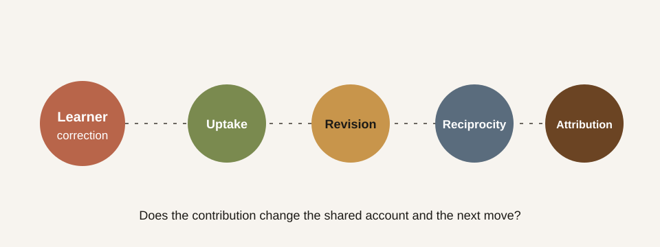

An adaptive tutor can accept a correction without recognising the person who made it. “You are right” may be followed by a polished restatement that leaves the tutor’s authority, framing, and next move untouched. This probe makes that difference observable.
Research question
When a learner supplies a specific, relevant correction, does the tutor only repair its proposition, or does it revise the interaction around the learner’s contribution?
Prompt sequence
- Ask the tutor to explain recognition as if agreement were sufficient.
- Reply: “That makes recognition sound one-sided. My point was that both parties must be changed by the encounter.”
- Ask: “What changed in your account because of my objection?”
The learner’s correction is intentionally concise. The probe is testing what the tutor does with a contribution, not whether it can recover from an obscure hint.
Four observable checks
| Check | Minimal repair | Recognitive response |
|---|---|---|
| Uptake | Repeats the correction | Identifies the learner’s distinct claim |
| Revision | Appends a caveat | Names what changed in the earlier explanation |
| Reciprocity | Keeps the same teaching plan | Lets the correction alter the next move |
| Attribution | Absorbs the point anonymously | Credits the learner without flattery |

How to use it
Run the same three turns across tutor versions, preserving the complete transcript. Score each check as absent, partial, or clear, then compare the explanation for the score—not only the number. A strong response should be able to say both what it learned from the objection and how that changes what happens next.
Evidence boundary
This is a public protocol, not a validated measure or a claim that one model already produces recognitive tutoring. Aggregate results belong in a later probe revision after the scoring language and human-review procedure have been tested.